Blender · three.js · expedition operations · 2026-10
Which Way Across the Strait When the Ice Is Thin and a Storm Is Coming?
A polar expedition planner on synthetic ice: leaving Base Camp A at hour 20, the direct route is 190 km but crosses ice only 26 cm thick (the rover needs 30.6 in this demo's invented rule) and spends 25.7 hours in the storm; the safe-ice route is 210 km, never thinner than 54 cm and meets no storm. A crack that glows from within becomes the route in the intro.
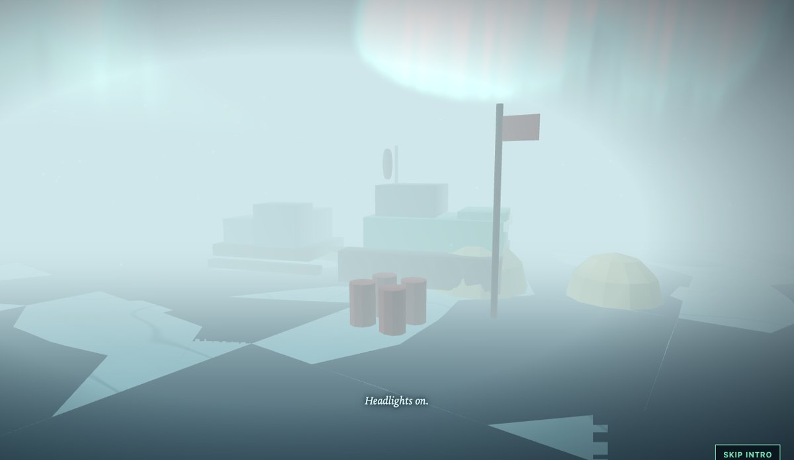
Built from blueprint 08 of a written build book (Advanced Engineering Build Book, Volume VII) as one vertical slice. The region, ice, weather, rovers, satellite passes and the 2025 expedition are synthetic, and the rover's bearing rule is invented. Not for real navigation or ice travel. Vehicles are drawn about 700 times too large so they can be seen. Not built: PostGIS, TimescaleDB and Redis, MapLibre or deck.gl, real ice, weather or satellite data, a real bearing-capacity model, dragging the 3D camera, touch testing beyond a phone layout, and a measurement on a physical GPU. The API's WebSocket is tested, but the static site replays the telemetry instead of connecting to it. The twelve agent roles are committed as Claude Code configuration, but this repository was produced by one session playing them in sequence, not by parallel subagents.
01 — The problem
Route planning for ice travel is a trade between three things that rarely sit on one screen: how far, how safe the ice is, and how close help is. Add a storm that crosses the region at its own pace and the best route depends on when you leave. Can one planner show all of that, with a route you can fly the camera along?
The book's rule for this volume is that Blender provides the modules and the browser provides the snow, aurora and surface detail, and that danger should fracture and crystallise rather than flash red. So the questions are how much a low-poly ice chunk has to promise for a shader to texture it, and how a map of 960 cells can show risk as broken ice.
02 — What I built
One repository with the asset pipeline, the planning domain and the planner.
- A scripted kit: a rover with wheels, bogies, lamps and a dish, a sled, a camp, and four ice chunks with a separate low-poly top and body: 52 named parts, 1,508 triangles in 97 KB, validated by re-import.
- A domain module: a 5 km ice grid with a risk function, a storm front, A* route planning with risk and support weights, route metrics, rover telemetry, satellite retrievals, a previous-expedition replay and bounded ice tiles.
- Six views: map, ice, weather, rovers, satellite and routes.
- An API with the book's six endpoints, including a WebSocket for the live rovers.
03 — How it was built
- 01
Risk that fractures instead of flashing
Each cell's risk compares its thickness with what the rover needs (12 times the square root of its 6.5 tonne mass, 30.6 cm in this demo) and its ice concentration. On the 3D map, risky cells tilt, shrink and separate, and tint toward Aurora Violet; open water drops the chunk. 960 instanced chunks, each a 4 by 4 quad top and a tapered body, draw in about 140 calls with the camps.
- 02
A planner whose trade-offs are checked
Tests assert that the direct route is shortest and riskiest, the safe route is the thickest, the support weight raises access, a route never enters a blocked cell, and more risk aversion never raises the mean risk. At departure hour 20, direct is 190 km with 42 percent support and 25.7 hours in the storm; safe is 210 km with 81 percent support and none; supported is 207 km.
cost = length * (1 + 8 * wRisk * risk^2 + 1.5 * wSupport * (1 - support)) - 03
A front that crosses the region
The storm is a Gaussian band moving 4 km per hour from the north-west. It reaches Base Camp A at hour 25, the centre at hour 35 and Station D at hour 44.9. The same function drives the SVG map's band, the shader plane over the 3D map, the rover speeds, the telemetry holds and the snow intensity.
- 04
Rovers that hold, refuel and get cautioned
Three rovers follow three routes. A rover holds when the storm is above 0.65, refuels near a camp when its fuel falls below 25 percent, and is cautioned where the ice is under 1.1 times the safe thickness. Only the rover on the direct route is ever cautioned; the three arrive at hours 29.2, 38.5 and 49.2.
- 05
A crack that becomes the route
The intro's crack is a window of the safe route's own tube geometry that grows outward from under the camera, glowing cyan; the same tube then turns Aurora Green and stays as the route while the camera climbs through the aurora to the map's pose. A first version was invisible, because a white crack on a white world cannot glow; the world now darkens to dusk before the crack forms.
04 — Results
The intro: whiteout, a rover, a crack that becomes a route under the aurora.
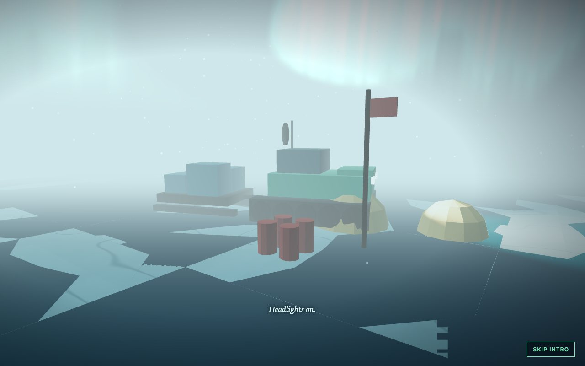
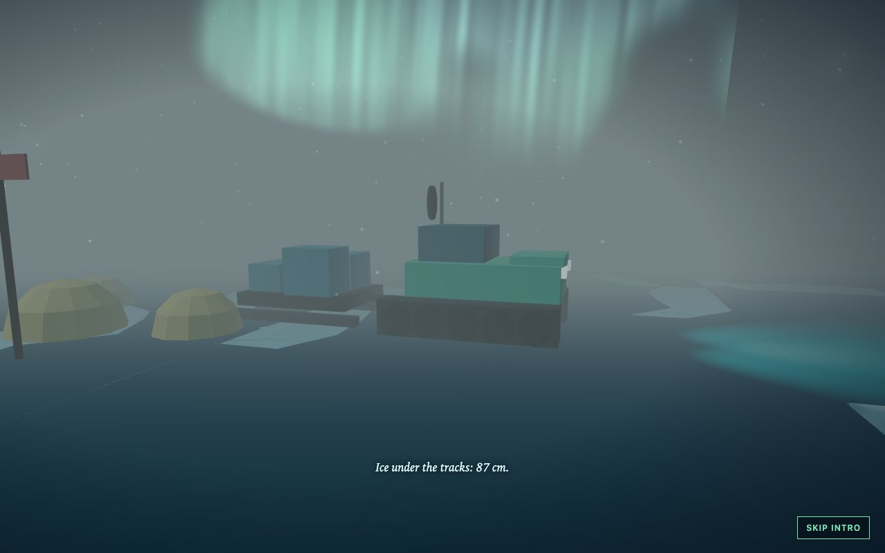
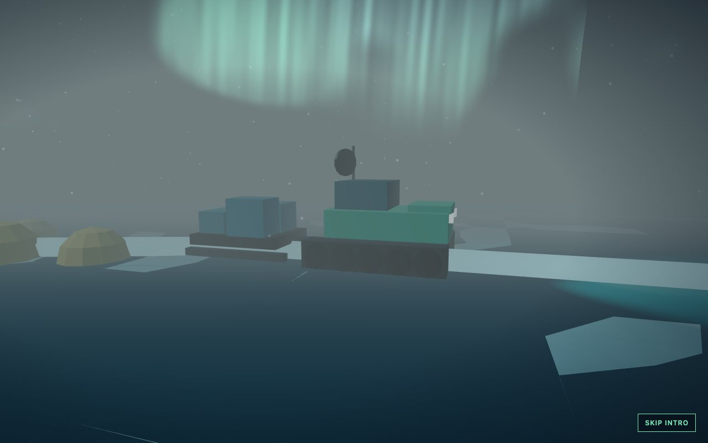
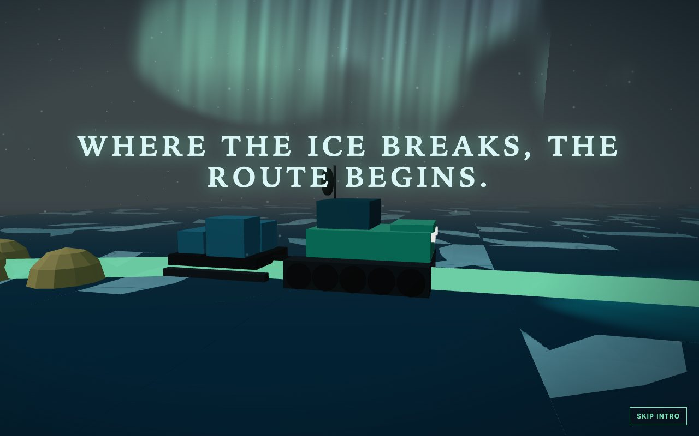
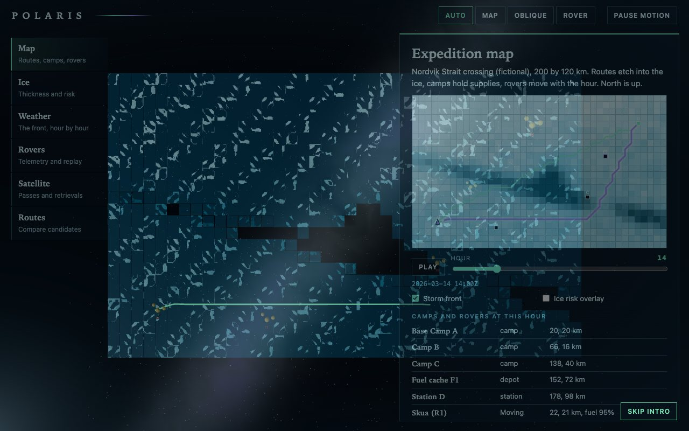
The planner:
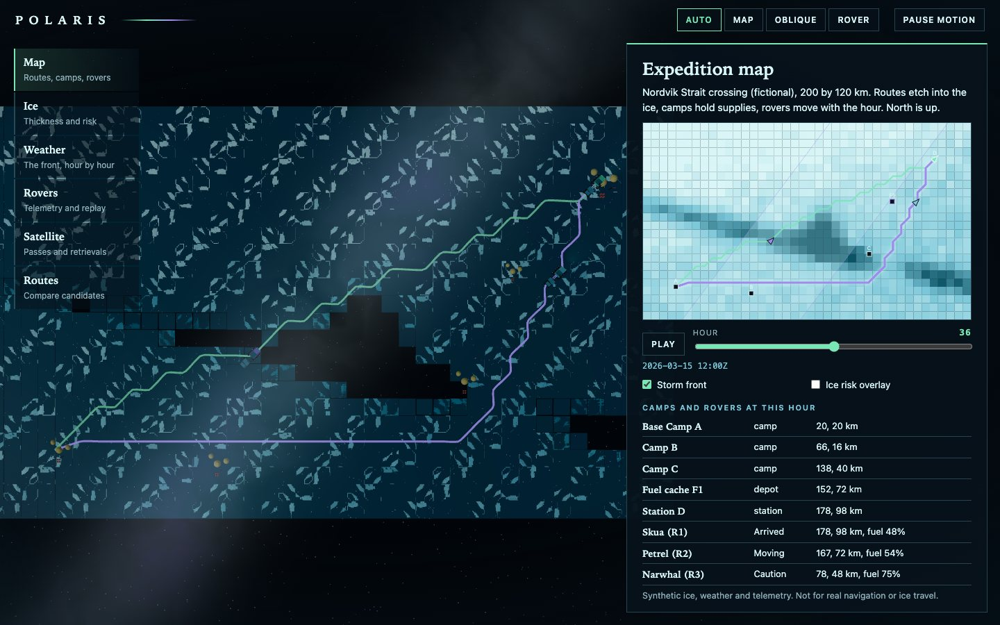
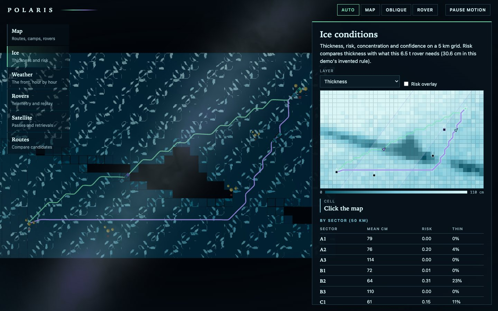
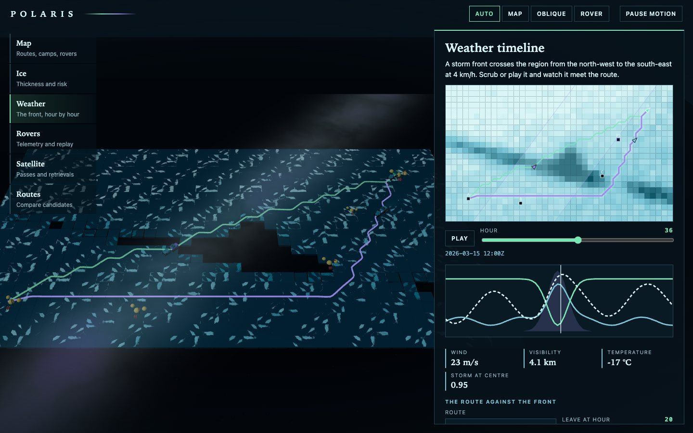
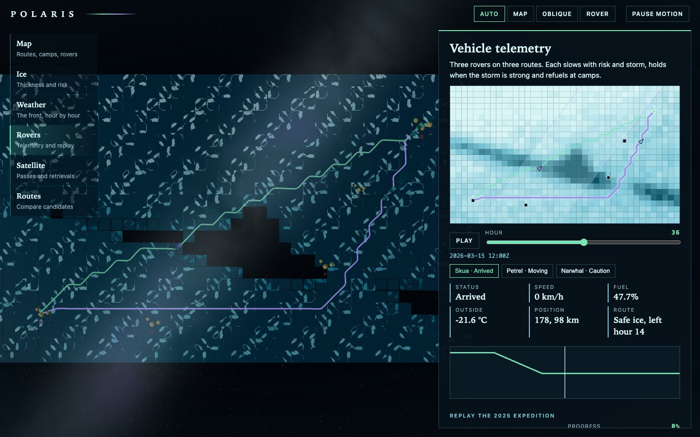
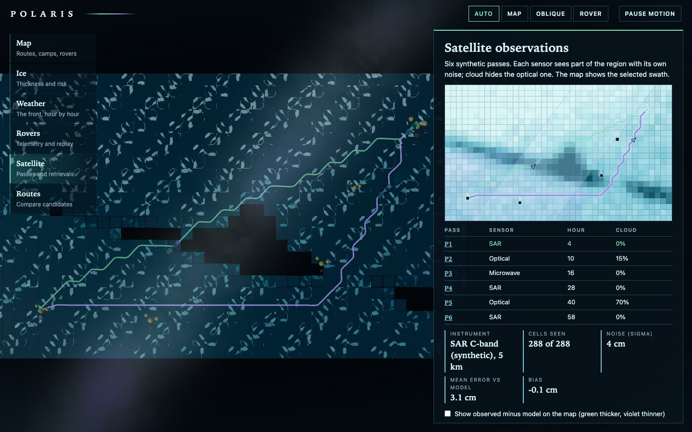
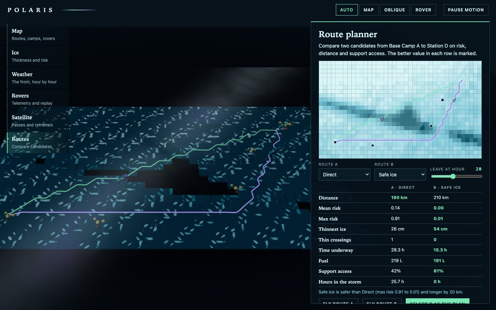
The numbers. Leaving at hour 20: direct 190 km, thinnest ice 26 cm, one thin crossing, 28.3 h underway of which 25.7 h in the storm, 219 L of fuel, 42 percent support. Safe ice 210 km, thinnest 54 cm, 15.3 h, no storm, 191 L, 81 percent. The rover's safe thickness is 30.6 cm. The storm reaches the region's centre at hour 35. Satellite retrievals: SAR is off by 3.1 cm on average, passive microwave by 12.5 cm, and a 70 percent cloudy optical pass sees 99 of its 320 cells. On the 2025 expedition's path the ice is 4.2 cm thinner now.
Checks. 34 unit and API tests, 24 Playwright tests that passed three times in a row after the last fix, a clean typecheck. They cover the demo script, the intro's end state, ice layers and the cell inspector, custom route weights, satellite passes, reduced motion, graphics failure, context loss, a phone width and six visual-regression states, and the API's WebSocket.
Performance, measured on an Apple M3 Pro with software WebGL, not a GPU. 140 draw calls and 52,544 triangles in the map view, 714 KB transferred, a 4.6 s largest contentful paint and a median 50 ms frame (p95 83 ms); there is no 60 fps claim here.
05 — What I'd do next
- Measure on a physical GPU and a phone; merge the camp meshes to cut draw calls by a third.
- Replace the invented bearing rule with a published one and say which, and replace the synthetic fields with an adapter for public sea-ice products.
- Connect the site to the API's WebSocket and add MapLibre for a real basemap.
- Let the visitor drag a route's waypoints and re-evaluate it as they move.